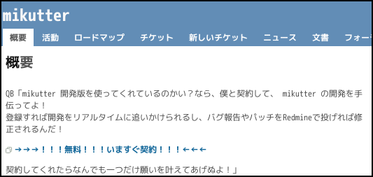
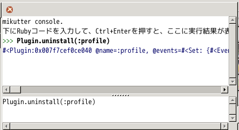
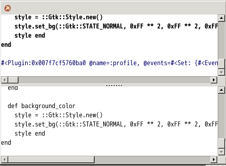
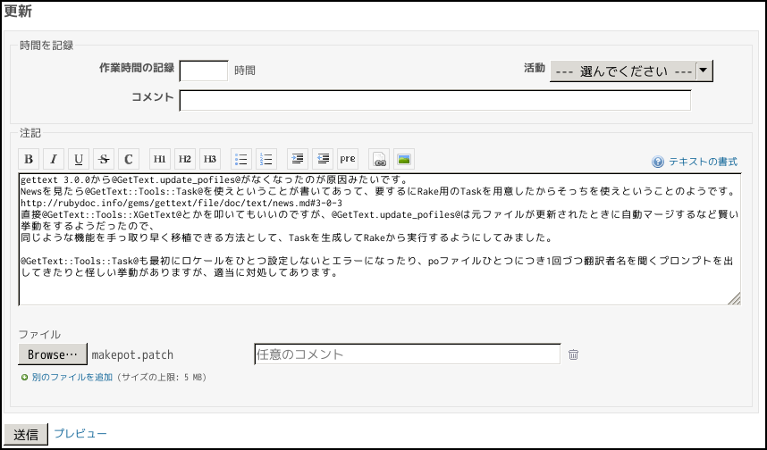

Patching mikutter
mikutter Advent Calendar 24日目の記事です。
ところでVim Advent CalendarはVACと略されることがあるようですが、mikutter Advent Calendarも同じように略すとMACになりますね。
Macといえば某りんご社のコンピュータが有名ですが、mikutterをMacで動かしたい人はmikutter Advent Calendar 2013 Day2を読みましょう。
こんな情報もすぐに見つかる。そう、mikutterならね。
閑話休題。
mikutterといえば変態的なプラグインを導入したり開発したりして楽しむものというイメージが強いですが、mikutterの魅力はそれだけに留まりません。 この記事では、隠れた楽しみ方のひとつであるパッチ作成について、実例を交えながら誰でも簡単に始められるような解説を書きます。
大丈夫だよ、みんなやっていることだし、mikutterを改良していくのはとっても気持ちいいんだ。 ちょっとでいいからやってみようよ。すぐに良くなるよ。
1. mikutter Redmineに登録する
何はともあれ、mikutter Redmineに登録するのが最優先です。 トップページのリンクから登録申請を投げましょう。

色々とアレですが気にしてはいけません。
申請を投げてからしばらくすると@toshi_aさんに承認されてアカウントが有効化されます。 数日待っても音沙汰がない場合はデスマ等で見落とされている可能性があるので、Twitterでつついてみましょう。
2. 問題を見つける
mikutterは結構バグや微妙な挙動、物足りない箇所があります。 そういうものを見つけたら、Redmineに報告してみましょう。
また、チケット一覧を見て気になるものがあればそれを追ってみるのも良いと思います。 今回は、TLで見かけた「バグ#629: mikutter makepot コマンドが正しく動作しないらしい」を追ってみることにしました。
とりあえずdevelopブランチの最新版をpullしてから、./mikutter.rb makepotしてみます。
1$ git branch 2* develop 3 master 4$ git pull 5Already up-to-date. 6$ ./mikutter.rb makepot 7failed plugins: [:achievement, :activity, :bugreport, :change_account, :command, "console", "direct_message", :extract, :gtk, :gui, :home_timeline, :mentions, :notify, :openimg, :profile, :proxy, :ratelimit, :saved_search, :search, :set_input, :set_view, :settings, :shortcutkey, :smartthread, :sound, :streaming, :geocode]
たしかにコケてますね。 最新版でも直っていないようですし、追ってみましょう。
3. 問題箇所を特定する
追いかける問題が決まったら、コードを見ていきます。
mikutterの機能の大部分はcore/plugin以下にあるプラグインで実装されているので、まずはそれっぽいプラグイン名から当たってみるのが良いでしょう。
プロフィール関係の挙動がおかしいならcore/plugin/profile、画像プレビュー関係ならcore/plugin/openimgのようになります。
mikutterのコードは連続するendが1行にまとめられている以外は結構普通で読みやすいので、このへんは一通り読んでおくと、コア部分の知識があまりなくてもなんとなく仕組みが見えてくるのではないかと思います。
今回のバグはプラグインではなく、mikutterの起動時に渡すコマンドライン引数の処理なのでちょっと特殊です。
そもそもコマンドライン引数がどう処理されるかよく知らないので、core/boot/option.rbを覗いてみます。
1if ARGV[0] 2 require File.expand_path(File.join(File.dirname(__FILE__), "..", 'utils')) 3 miquire :boot, 'check_config_permission' 4 file = File.join(File.dirname(__FILE__), "shell/#{ARGV[0]}.rb") 5 if FileTest.exist?(file) 6 require file 7 else 8 puts "no such command: #{ARGV[0]}" 9 end 10 exit 11end
このへんがコマンドライン引数の処理っぽいですね。
どうやらcore/boot/shell/makepot.rbを見ればいいみたいです。
1# -*- coding: utf-8 -*- 2# 全プラグインにpot作成 3 4miquire :core, "miquire_plugin" 5require 'gettext/tools' 6 7mo_root = File.join(CHIConfig::CACHE, "uitranslator", "locale") 8 9Miquire::Plugin.loadpath << Environment::PLUGIN_PATH << File.join(File.dirname(__FILE__), "..", "..", "plugin") << File.join(Environment::CONFROOT, 'plugin') 10 11enable_plugins = ARGV[1,] 12failed_plugins = [] 13 14Miquire::Plugin.each_spec do |spec| 15 if (enable_plugins.empty? or enable_plugins.include? spec[:slug].to_s) and 16 (defined?(spec[:depends][:plugin]) and spec[:depends][:plugin].include? "uitranslator") 17 po_root = File.join spec[:path], "po" 18 begin 19 GetText.update_pofiles(spec[:slug].to_s, 20 Dir.glob("#{spec[:path]}/**/*.rb"), 21 "#{spec[:slug]} #{spec[:version]}", 22 po_root: po_root) 23 rescue Exception => e 24 failed_plugins << spec[:slug] 25 end 26 end 27end 28 29puts "failed plugins: #{failed_plugins}" unless failed_plugins.empty?
GetText.update_pofilesが失敗すると、さっきのような表示が生成されるようです。
適当に例外を表示するようにして、もう一度makepotしてみます。
どうも呼び出しているメソッドがまずいみたいです。 gettextに関してはほとんど知らないですが、さすがに存在しないメソッドを呼び出すようなコードを書いていて気づかないということはあり得ないので、 ライブラリのバージョンが上がってインターフェースが変わってしまった可能性が高そうです。
git logでコミットログを見てみると
というログが引っかかりました。 ちょっと古いですが、mikutterの他言語化に関わっている人は少ないうえ、言語ファイルを作り直すような変更はここ最近なかったため、単に今まで気づかれていなかったといっても納得できないことはありません。
4. パッチを書く
問題箇所がわかったらパッチを書きます。
書き換える箇所がプラグインであれば、Alt+xでコンソールを開いてPlugin.uninstall(:profile)のようにしてから、修正したコードを貼り付けてCtrl+Enterで実行することでプラグインが更新され、
わざわざmikutterを再起動しなくても反映されることが多いです。
 
プラグインが複数のファイルに分かれていたり、内部でクラスを定義していたりオープンクラスしていたり、問題箇所がコア機能だったりするときは諦めて再起動を繰り返してください。 mikutterは起動時のリクエストはキャッシュを使うので、再起動を繰り返したからといってAPI切れで規制されるようなことはそうそうないはずです。
今回はプラグインそのものではないですが、GUI絡みではないので割と楽です。
とりあえずgettextのNewsを見てみると、確かにインターフェースが変わったと書いてあります。
GetText::Tools::Taskを使えばよいということなので、Taskを生成させてRubyコードからinvokeする方針で修正することにしました。
（GetTextのコードを読んで書き方を調べたりしたけど省略）
最終的に、こういう感じになりました。
1# -*- coding: utf-8 -*- 2# 全プラグインにpot作成 3 4miquire :core, "miquire_plugin" 5require 'gettext/tools/task' 6require 'rake' 7 8mo_root = File.join(CHIConfig::CACHE, "uitranslator", "locale") 9 10Miquire::Plugin.loadpath << Environment::PLUGIN_PATH << File.join(File.dirname(__FILE__), "..", "..", "plugin") << File.join(Environment::CONFROOT, 'plugin') 11 12enable_plugins = ARGV[1,] 13failed_plugins = [] 14 15Miquire::Plugin.each_spec do |spec| 16 if (enable_plugins.empty? or enable_plugins.include? spec[:slug].to_s) and 17 (defined?(spec[:depends][:plugin]) and spec[:depends][:plugin].include? "uitranslator") 18 po_root = File.join spec[:path], "po" 19 begin 20 GetText::Tools::Task.define do |task| 21 task.spec = Gem::Specification.new do |s| 22 s.name = spec[:slug].to_s 23 s.version = spec[:version].to_s 24 s.files = Dir.glob("#{spec[:path]}/**/*.rb") 25 end 26 task.locales = ["ja"] 27 task.po_base_directory = po_root 28 end 29 rescue Exception => e 30 failed_plugins << spec[:slug] 31 end 32 end 33end 34notice Rake::Task.tasks.join("\n") 35 36# gettext:po:updateがいちいち翻訳者名とか聞いてきてうざいので潰す。 37# 本来はgettextにパッチを送るとかするべきな気がする。 38class GetText::Tools::MsgInit 39 def translator_full_name 40 "" 41 end 42 43 def translator_mail 44 "" 45 end 46end 47 48Rake::Task["gettext:pot:create"].invoke 49Rake::Task["gettext:po:update"].invoke 50 51puts "failed plugins: #{failed_plugins}" unless failed_plugins.empty?
そういえばmikutterにパッチを送るとき、連続するendを1行にまとめるとかはあまり気にしてないですね……。
5. パッチを投げる
mikutterはgit管理されているので、編集した差分はgit diffすることで表示できます。
この出力をファイルに書き出し、Redmineで修正報告と一緒に添付します。
場合によっては、チケットを立てると同時にパッチを添付してもよいでしょう。
1$ git diff > makepot.patch
パッチができたらRedmineで報告します。

6. 受理される
@toshi_aさんがパッチを確認するとなんらかのレスポンスをくれます（メールが飛んでくるはずです）。
肯定的な返事が返ってきて、状態が「レビュー待ち」になったらパッチが適用されたということなので、最新のコードをgit pullなどで引っ張ってきて、自分のパッチが正常にマージされているか、
ちゃんとmikutterが起動するかなどを確認します。
問題がなさそうだったら状態を「解決」にしてもう一度Redmineに報告を投げると、そのうちチケットがクローズされます。
ちなみに、パッチが取り込まれるとその人の名前でコミットされます。 ちょっと嬉しいですね。
7. おわりに
この記事では、mikutterにパッチを送る流れを解説しました。 これを読んで、mikutterの改善に興味をもつ人が増えると嬉しいなぁと思います。